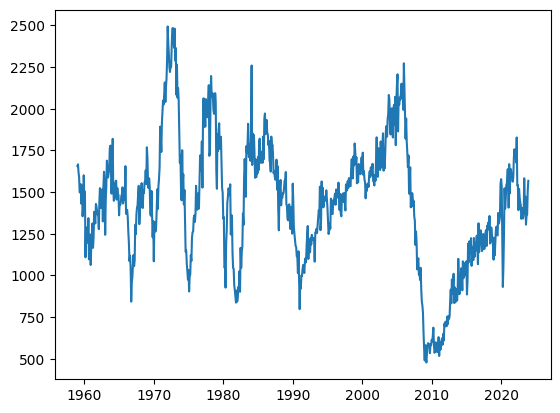
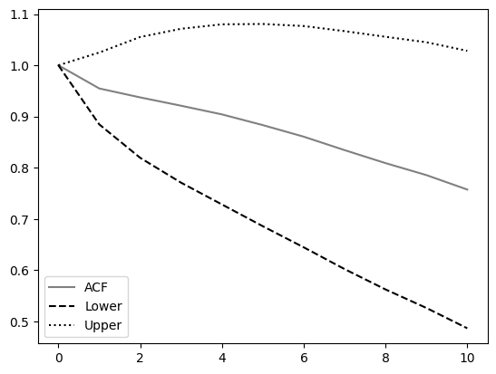
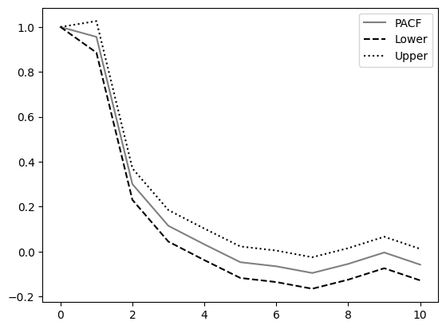
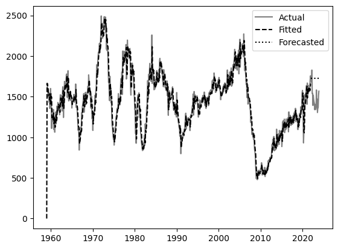

Naryan Aggarwal
Business and Data Analyst Student
Benedictine University in Lisle
Hello, I'm Naryan Aggarwal,
a college senior studying Business Analytics.
As a graduating college student with a Bachelor's degree in Business Analytics, I am eager to apply my analytical and business skills to data-driven decision-making in a dynamic corporate environment. With a solid foundation in statistical analysis, data visualization, and Python, I am seeking opportunities within the field of business analytics. I wish to utilize my knowledge to extract insights from complex datasets, ultimately aiming to drive innovation and efficiency. I am excited to embark on a career path where I can make an impact by transforming data into valuable solutions.
My Skills
In progress
Academic Portfolio
I have practiced with many methods of data analytics so far in my course curriculum. Below are some examples of my implementations of some classical and "big data" methods. For the classical methods, I have also included my Python code so results can be checked and reproduced.
Naive Method
This method is an analysis of a predetermined set of data using the naive method. After generating a simple forecast, the program then calculates errors, absolute errors, and absolute percentage errors. Using that data, the MAPE is calculated. The results are below
| Actual | Forecast | Error | Absolute Error | Absolute % Error |
|---|---|---|---|---|
| 92.0 | NaN | NaN | NaN | NaN |
| 91.7 | 92.0 | -0.3 | 0.3 | 0.327154 |
| 91.0 | 91.7 | -0.7 | 0.7 | 0.769231 |
| 89.0 | 91.0 | -2.0 | 2.0 | 2.247191 |
| 94.7 | 89.0 | 5.7 | 5.7 | 6.019007 |
| 93.5 | 94.7 | -1.2 | 1.2 | 1.283422 |
| 90.0 | 93.5 | -3.5 | 3.5 | 3.888889 |
| 89.8 | 90.0 | -0.2 | 0.2 | 0.222717 |
| 91.2 | 89.8 | 1.4 | 1.4 | 1.535088 |
| 87.2 | 91.2 | -4.0 | 4.0 | 4.587156 |
| 93.8 | 87.2 | 6.6 | 6.6 | 7.036247 |
| 98.2 | 93.8 | 4.4 | 4.4 | 4.480652 |
| NaN | 98.2 | NaN | NaN | NaN |
MAPE: 2.9451594710015985
import numpy as np
import pandas as pd
"""Here we type the UMICS data directly (We are entering the data directly for simplicity.)"""
# The UMICS data
actual = pd.Series([92.0, 91.7, 91.0, 89.0, 94.7, 93.5, 90.0, 89.8, 91.2, 87.2, 93.8, 98.2])
forecast = pd.Series(np.ones(len(actual) + 1)) # Create the column for the forecast
forecast[0] = float("NaN") # No forecast here
# Run the indented commands repeatedly, with the value of `i` ranging from 1 to `actual.size`
for i in range(1, len(actual)+1):
forecast[i] = actual[i - 1] # Use the naive method to create the forecast
df = pd.DataFrame(data = {"Actual": actual, "Forecast": forecast}) # Create a DataFrame (like a spreadsheet)
# Print the DataFrame
print(df)
error = df["Actual"] - df["Forecast"] # The error column
absError = abs(error) # The absolute error column
absPctError = absError/df["Actual"] * 100 # The absolute percentage error column
mape = absPctError.mean() # Find the mean absolute percentage error
# Append the error, absolute error, and absolute percentage error columns to the DataFrame `df`
df = pd.DataFrame(data = {**df, "Error": error, "Absolute Error": absError, "Absolute % Error": absPctError })
# Print a formatted string (put Python variable names inside of `{}`)
print(f"{df}\n\nMAPE: {mape}")
Causal Regression
Does a causal regression (Ordinary Least Squares) of sandwich sales on the basis of ketchup and mustard prices. Fit is calculated using the first 52 weeks. Then an additional four weeks are simulated to test the accuracy of the model.
Results are listed below.
| Dep. Variable: | Sandwich Sales |
| R-squared: | 0.971 |
| Model: | OLS |
| Adj. R-squared: | 0.970 |
| Method: | Least Squares |
| F-statistic: | 899.1 |
| Date: | Fri, 24 May 2024 |
| Prob (F-statistic): | 1.28e-41 |
| Time: | 18:05:23 |
| Log-Likelihood: | 305.56 |
| No. Observations: | 56 |
| AIC: | -605.1 |
| Df Residuals: | 53 |
| BIC: | -599.0 |
| Df Model: | 2 |
| Covariance Type: | nonrobust |
| Coefficients | |
|---|---|
| const | coef: 5.0007, std err: 0.004, t: 1374.715, P>|t|: 0.000, [0.025: 4.993, 0.975: 5.008] |
| Ketchup Prices | coef: 0.0160, std err: 0.009, t: 1.820, P>|t|: 0.074, [0.025: -0.002, 0.975: 0.034] |
| Mustard Prices | coef: 0.0387, std err: 0.005, t: 8.438, P>|t|: 0.000, [0.025: 0.030, 0.975: 0.048] |
| Diagnostics | |
| Omnibus: | 4.707 |
| Prob(Omnibus): | 0.095 |
| Durbin-Watson: | 1.532 |
| Jarque-Bera (JB): | 4.090 |
| Skew: | 0.659 |
| Prob(JB): | 0.129 |
| Kurtosis: | 3.121 |
| Cond. No.: | 235 |
To consider the results:
- Coefficients: The intercept of the model is very close to the true intercept of the simulation. In addition, the Mustard Price coefficient indicates a strong statistical significance. This is further confirmed by the low p-value.
- R-Squared: The high value of the R-squared statistic indicates good fit by strong capture of the variance within the data.
- F-stat: A very high F-statistic with a near-zero p-value indicates that the model is statistically significant.
- The estimates are indicated to be rather precise with the small standard errors.
- Diagnostic Tests
- Durbin-Watson: indicates a small degree of positive autocorrelation.
- Omnibus, Jarque-Bera, Skew, and Kurtosis: the residuals might not be perfectly normally distributed.
Overall, the model is a relatively good fit, with notes that there may be a small degree of influence on future performance based on past sales prices (small positive autocorrelation). It should be noted as well that this model does possess minor issues with residual normality and the previously mentioned autocorrelation.
import numpy as np
from numpy.random import default_rng
from pandas import Series, concat
import statsmodels.api as sm
# Helpful in reproducing results
random_seed_id = 42
def simulate_topping_prices(topping="Ketchup", intercept=1.00, slope=0.042, sigma=0.021, num_weeks=56, rng=None):
if rng == None:
rng = default_rng()
epsilons = rng.normal(loc=0, scale=sigma, size=num_weeks)
times = np.arange(num_weeks)
prices = intercept + slope * times + epsilons
return Series(prices, name=f"{topping} Prices")
def simulate_sandwich_sales(ketchup_prices, mustard_prices, intercept=5.00, coeff_ketchup=0.021, coeff_mustard=0.036, sigma=0.001, rng=None):
if rng == None:
rng = default_rng()
if len(ketchup_prices) != len(mustard_prices):
return None
epsilons = rng.normal(loc=0, scale=sigma, size=len(ketchup_prices))
sales = intercept + coeff_ketchup * ketchup_prices + coeff_mustard * mustard_prices + epsilons
return Series(sales, name="Sandwich Sales")
rng=default_rng(seed=random_seed_id)
ketchup_prices = simulate_topping_prices(topping="Ketchup", intercept=1.50, slope=0.004, sigma=0.02, rng=rng)
mustard_prices = simulate_topping_prices(topping="Mustard", intercept=2.50, slope=0.008, sigma=0.01, rng=rng)
sandwich_sales = simulate_sandwich_sales(ketchup_prices, mustard_prices, rng=rng)
data=concat([sandwich_sales, ketchup_prices, mustard_prices], axis="columns")
prices_data = data[["Ketchup Prices", "Mustard Prices"]]
print(prices_data.head())
x = sm.add_constant(data[["Ketchup Prices", "Mustard Prices"]])
y = data["Sandwich Sales"]
model = sm.OLS(y, x)
fit = model.fit()
print(fit.summary())
print("The `x` values")
print(x.head())
print("The `y` values")
print(y.head())
ARIMA (Autoregressive Integrated Moving Average)
This program performs a time series analysis using the ARIMA method on housing data sourced directly from the US Census Bureau. The data is read from an excel file and indexed by month. The last 24 points are reserved for testing.
Exploratory Plot
Autocorrelation Plot
Partial Autocorrelation Plot
ARIMA Model Plot
SARIMAX Results
| Dep. Variable: | PHS | ||||
|---|---|---|---|---|---|
| No. Observations: | 756 | ||||
| Model: | ARIMA(1, 1, 1) | ||||
| Log Likelihood: | -4610.091 | ||||
| Date: | Fri, 24 May 2024 | ||||
| AIC: | 9226.181 | ||||
| Time: | 20:50:07 | ||||
| BIC: | 9240.061 | ||||
| Sample: | 01-01-1959 - 12-01-2021 | ||||
| HQIC: | 9231.528 | ||||
| Covariance Type: | opg | ||||
Parameter Estimates
| Variable | Coefficient | Std. Error | z | P>|z| | [0.025 | 0.975] |
|---|---|---|---|---|---|---|
| ar.L1 | -0.0273 | 0.093 | -0.295 | 0.768 | -0.209 | 0.154 |
| ma.L1 | -0.3161 | 0.088 | -3.604 | 0.000 | -0.488 | -0.144 |
| sigma2 | 1.18e+04 | 467.224 | 25.254 | 0.000 | 1.09e+04 | 1.27e+04 |
Diagnostic Tests
| Ljung-Box (L1) (Q): | 0.00 |
| Prob(Q): | 0.98 |
| Jarque-Bera (JB): | 81.01 |
| Prob(JB): | 0.00 |
| Heteroskedasticity (H): | 0.63 |
| Prob(H) (two-sided): | 0.00 |
| Skew: | -0.29 |
| Kurtosis: | 4.50 |
Conclusions on the results:
- Goodness of Fit: The various criterion (AIC, BIC, and HQIC) are indicative of a better model. The model appears to fit well from the data based on these metrics.
- Coefficients: Though the autoregressive term is not significant, the Moving Average term suggests it is a very important part of the model.
- Variance: It should be noted that variance, however, is quite high, which suggests the model does not cover much of the variance in the data.
- Ljung-Box Test (Diagnostic Test): Suggests low autocorrelation, which is great for an ARIMA model.
- Jarque-Bera Test (Diagnostic Test): Residuals are not normally distributed, meaning that forecasts using this model may not be evenly reliable.
- Heteroskedasticity Test (Diagnostic Test): Building upon the previous test, this value suggests that the residuals' variance is inconsistent, which can affect the model's ability to perform.
- Skewness and Kurtosis Test (Diagnostic Test): Negative skewness indicates that the residuals are skewed to the left. A kurtosis value greater than 3 indicates heavier tails than a normal distribution, suggesting outliers.
What we can gather from this overall is that, although the model seems to encapsulate the data well, it is highly likely to falter in its current state if used for forecasting or actual business decisions. Some improvements can be made that can assist in fortifying the model.
- Adding additional predictors could address the model not normally covering the patterns in the data.
- Removing the AR term could prove fruitful as it is seems to be unnecessary. This would also make the model easier to understand if it is not needed.
- As data is gathered from a real source, outliers or possibly structural changes in the data source will affect the results.
from pandas import DataFrame, read_excel, concat
from matplotlib import pyplot as plt
from statsmodels.tsa.api import acf, pacf, ARIMA, arma_order_select_ic
def correlogramAsDataFrame(correlogram, partial=False):
# Find the correlogram with confidence intervals for each lag
if partial:
label="PACF"
else:
label="ACF"
vals, confints = correlogram
# Separate the lower bounds and upper bounds of the confidence intervals
lower = confints.take(indices=0, axis=1)
upper = confints.take(indices=1, axis=1)
# Print the correlogram in text form for preciser reading
return DataFrame({label: vals, "Lower": lower, "Upper": upper})
def plotCorrelogram(correlogram):
# Plot the correlogram with the confidence intervals for each lag
plt.plot(correlogram.iloc[:,0], color="gray", label=correlogram.columns[0])
plt.plot(correlogram[["Lower"]], color="black", linestyle="dashed", label="Lower")
plt.plot(correlogram[["Upper"]], color="black", linestyle="dotted", label="Upper")
plt.legend()
plt.show()
def diffSeries(series):
return [series[i+1]-series[i] for i in range(len(series) - 1)]
# Access the data set; `sheet_name=None` means import all sheets from the workbook.
data=read_excel("https://www.census.gov/construction/nrc/xls/starts_cust.xlsx", sheet_name=None, header=[5, 5, 5, 5])
# Extract rows 0 to 779 and columns 0 to 1 from the "Seasonally Adjusted" sheet.
df = data["Seasonally Adjusted"].iloc[0:780, 0:2]
# Update the column headers
df.columns = ["Month", "PHS"]
# Get the phs `Series` by itself
phs = df["PHS"]
# Label the rows of `phs` by the month
phs.index = df["Month"]
# Do an initial exploratory plot
plt.plot(phs)
plt.show()
# Find and display the autocorrelation function.
correlAcf = acf(phs, nlags=10, alpha=0.05)
acfDF = correlogramAsDataFrame(correlAcf)
plotCorrelogram(acfDF)
# Find and display the partial autocorrelation function.
correlPacf = pacf(phs, nlags=10, alpha=0.05)
pacfDF = correlogramAsDataFrame(correlPacf, partial=True)
plotCorrelogram(pacfDF)
# Order selection
p = 1
d = 1
q = 2
model = ARIMA(phs, order=(p, d, q))
fitted_model = model.fit()
print(fitted_model.summary())
# Use AIC/BIC to determine the model order
print(arma_order_select_ic(diffSeries(phs), max_ar=3, max_ma=5, ic=["aic", "bic"]))
# Use the last `holdout` months as the out-of-sample holdout/validation data set
holdout = 24
train_phs = phs[:-holdout]
test_phs = phs[-holdout:]
# Use the `train_phs` data to fit an ARIMA model.
p = 1
d = 1
q = 1
pre_model_train = ARIMA(train_phs, order=(p, d, q), freq="MS")
model_train = pre_model_train.fit()
# Forecast the values for the times in `test_phs` using the `train_phs` data
forecast = model_train.forecast(steps=holdout)
forecast.name = "Forecast"
# Define a convenience function to find the MAPE error metric
def mape(forecast, actual):
return (abs(actual - forecast)/actual).mean()
# Find the MAPE values
mape_train = mape(model_train.fittedvalues, train_phs)
mape_test = mape(forecast, test_phs)
# Create a `DataFrame` with the actual values and the forecasted values for the holdout
validate_phs = concat([test_phs, forecast], axis="columns")
# Print the holdout `DataFrame` and the MAPE for both the training and testin data
print("Actual and forecasted PHS:")
print(validate_phs, '\n')
print("MAPE for the training data:", mape_train)
print("MAPE for the testing data:", mape_test, '\n')
# Plot the actual data, fitted values (estimated from `train_phs`), and forecasted values (over the holdout)
plt.plot(phs, color="gray", label="Actual")
plt.plot(model_train.fittedvalues, color="black", linestyle="dashed", label="Fitted")
plt.plot(forecast, color="black", linestyle="dotted", label="Forecasted")
plt.legend()
plt.show()
# Print the summary of the fitted model (including the values of the smoothing constants)
print(model_train.summary())
Contact Me
Or reach me at naryantaggarwal@gmail.com